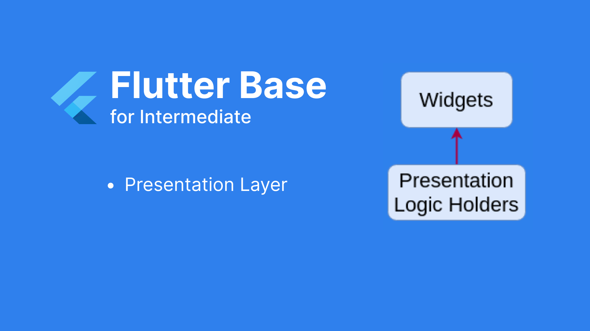

Implementing Flutter Base - Part 5: Presentation Layer
I. Tasks
The task of this layer is to display the user interface and interact with users.

II. The tasks that need to be handled.
In this layer, we will structure the code following the feature-first approach, encompassing features that include blocs, states, and widgets. These features are constructed based on the specific requirements of each project. To complete this foundational part, we need to address several tasks, such as:
- Structuring based on the feature-first approach
- Screen navigation
- Displaying errors and exceptions from the lower layers, if necessary, on the user interface
- Implementing multilingual support
- Implementing base components (such as common buttons, text styles, etc.) and base styles
III. Detailed processing
1. Structuring based on the feature-first approach

The "presentation" folder contains corresponding features within the application. Inside, there are structures related to:
- Bloc: for state management
- Components: holding widgets that break down the screen into smaller parts
- Individual "screens" representing various screens in the application.
2. Displaying errors and exceptions from the lower layers, if necessary, on the user interface
In the Domain and Data layers, after handling logic and retrieving data for the Presentation layer, there may be errors encountered during this process that need to be communicated to the user on the screen. For example, displaying an alert when the API connection fails, and so on.

I implemented an extension for Future, so the Future functions in the Bloc Cubit, after processing and returning an error to the screen, only need to catch the error using "onCatchError" to display the corresponding error message.

3. Screen navigation
In this part, I use the Navigator provided by Flutter, which is quite simple and convenient to use.

I've separated this into a class to consolidate all the screens the
app has as shown above. We only need to declare it in the main file
with the onGenerateRoute key parameter.
When navigating, I simply pass the corresponding screen names and params:
4. Implementing multilingual support
Mobile apps often need to support multiple languages, so precalculating and implementing multilingual support in the base is essential. There are many libraries that support this, and their usage is straightforward. You just need to choose the one that fits your project best.
5. Implementing base components (such as common buttons, text styles, etc.) and base styles
There are many widgets that will appear repeatedly in your app. To minimize redundant code, you should create base components and reuse them. As mentioned in part a, we also have components within features. The main difference here is that base components contain widgets used throughout the entire app, while feature components are intended to split and reuse widgets in individual screens.
Regarding base styles, they will include colors, fonts, and icons: